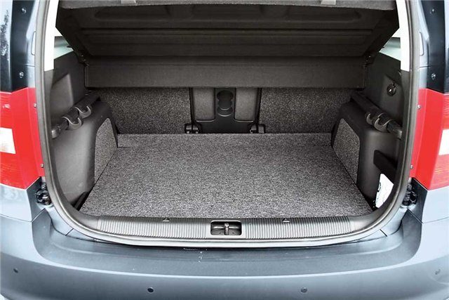

Пылесос багажника – это то, что обеспечивает чистоту в багажном отделении автомобиля. Как правило, именно багажнику незаслуженно уделяется мало внимания. Владельцы автомобилей в большинстве своём уже взяли в привычку регулярно обращаться в автомойки за тем, чтобы очистить кузов машины от грязи и пыли, помыть двигатель автомобиля или же его салон, но о багажнике чаще всего никто не вспоминает. А ведь пылесос багажника также важен, как, скажем, мойка автомобиля. Багажное отделение засоряется довольно быстро, если оно активно используется. Многие из нас ездят на дачи или в деревни и везут оттуда мешки с картошкой, банки с закатками и многое-многое другое. Это всё складируется в багажник автомобиля. Вся пыль и грязь за время дороги оседает на обшивку багажного отделения. Здесь не многим помогает полиэтилен, подкладываемый под груз или какие-либо другие ухищрения. В любом случае багажник оказывается грязным. В таком случае на помощь приходит пылесос багажника. Пылесос багажника сможет поддерживать Ваш автомобиль в чистоте и порядке, поэтому занимаясь уборкой салона машины, не забудьте почистить и багажное отделение.
Наномойка Антидождь Инновационный автошампунь Полировка «Жидкое стекло»